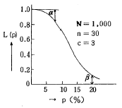
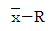
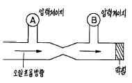

건설기계정비기능장 (2003-03-30 기출문제)
1과목: 임의 구분
1. 사용중인 실린더 라이너에서 마모가 가장 큰 곳은?
- 상사점 피스톤 제1링의 크랭크축 길이방향
- 하사점 피스톤 제1링의 크랭크축 길이방향
- 상사점 피스톤 제1링의 크랭크축과 직각방향
- 하사점 피스톤 제1링의 크랭크축과 직각방향
(정답률: 86%)

2. 피스톤링의 3가지 하는 일은?
- 냉각, 밀봉 및 오일 제거
- 밀봉, 피스톤 슬랩의 방지와 압축의 유지
- 밀봉, 압축제어, 냉각
- 밀봉, 블로우바이, 압축유지
(정답률: 100%)
3. 윤활유 소비의 원인이 아닌 것은?
- 각 계통에서의 누유
- 엔진구성 재료와의 화학적 결합
- 배기가스와 함께 배출
- 연소실 내에서 연소
(정답률: 알수없음)
4. 제동 연료 소비율이 be=190g/PSㆍh, 연료의 저위발열량이 10,200 kcal/kg인 기관의 제동 열효율(%)은?
- 27.5
- 19.4
- 32.6
- 47.2
(정답률: 46%)
5. 농후한 혼합기가 기관에 미치는 영향 중 해당되지 않는 것은?
- 기관의 과열
- 불완전연소
- 기관의 과냉
- 동력의 감소
(정답률: 75%)
6. 가솔린 엔진에서 노크발생의 주 원인이 아닌 것은?
- 연료의 혼합기가 적당하지 못할 때
- 엔진이 과대한 부하로 운전될 때
- 엔진의 압축비를 낮추었을 때
- 냉각수 윤활유의 부족으로 실린더 및 피스톤이 과열되었을 때
(정답률: 75%)
7. 2행정 사이클 기관을 4행정 사이클 기관에 비하여 고속으로 하는 것이 어려운 이유는?
- 왕복 관성력이 크므로
- 소기효율이 나쁘므로
- 열응력이 크므로
- 회전 관성력이 크므로
(정답률: 알수없음)
8. 4행정 싸이클 디젤기관에서 최대압력이 발생되는 시기는 언제인가?
- 압축행정이 막 완료되는 순간
- 동력행정에서 TDC후 10~15° 에서
- 동력행정이 반쯤 진행되었을 때
- 피스톤이 BDC에 이르렀을 때
(정답률: 70%)
9. 다음 중 인터쿨러(Intercooler)의 기능은?
- 라디에이터로 공급되기 전에 엔진 냉각수를 식힌다.
- 터보차저를 떠난 배기가스를 식힌다.
- 흡입공기를 냉각시켜 공기 밀도를 증가시킨다.
- 터보차저로 들어오는 공기의 온도를 상승시킨다.
(정답률: 92%)
10. 배압이 높을때 기관에 미치는 영향 중 틀린 것은?
- 소제 작용이 불량해 진다.
- 발생마력이 감소한다.
- 엔진의 회전수가 빨라진다.
- 배기온도가 높아 부식을 촉진한다.
(정답률: 67%)
11. 디젤기관이 1200rpm 일때 분사지연과 착화지연시간이 1/600초면 크랭크 각도로 몇도 전에 분사하여야 하는가?
- 14°
- 8°
- 10°
- 12°
(정답률: 59%)
12. 1 KW는 몇 kgf.m/sec에 해당 하는가?
- 78
- 427
- 102
- 632
(정답률: 47%)
13. 기관이 마멸되는 원인과 관계가 적은 것은?
- 흡입되는 먼지
- 연소 화합물
- 윤활부족
- 압축압력
(정답률: 50%)
14. 디젤기관 전자제어 시스템의 기능 중 분사량 제어가 아닌 것은?
- 기본 분사량 제어
- 불균량 보상 분사량 제어
- 시동시 분사량 제어
- 저온시 분사량 제어
(정답률: 80%)
15. 그림의 OC곡선을 보고 가장 올바른 내용을 나타낸 것은?

- α : 소비자 위험
- L(p) : 로트의 합격확률
- β : 생산자 위험
- 불량율 : 0.03
(정답률: 알수없음)
16. 품질관리 활동의 초기단계에서 가장 큰 비율로 들어가는 코스트는?
- 평가코스트
- 실패코스트
- 예방코스트
- 검사코스트
(정답률: 알수없음)
17. PERT/CPM에서 Network 작도시 碇은 무엇을 나타내는가?
- 단계(event)
- 명목상의 활동(dummy activity)
- 병행활동(paralleled activity)
- 최초단계(initial event)
(정답률: 알수없음)
18. 신제품에 가장 적합한 수요예측 방법은?
- 시계열분석
- 의견분석
- 최소자승법
- 지수평활법
(정답률: 87%)
19. 관리도에 대한 설명 내용으로 가장 관계가 먼 것은?
- 관리도는 공정의 관리만이 아니라 공정의 해석에도 이용된다.
- 관리도는 과거의 데이터의 해석에도 이용된다.
- 관리도는 표준화가 불가능한 공정에는 사용할 수 없다.
- 계량치인 경우에는

관리도가 일반적으로 이용된다.
(정답률: 65%)
20. 다음은 워크 샘플링에 대한 설명이다. 틀린 것은?
- 관측대상의 작업을 모집단으로 하고 임의의 시점에서 작업내용을 샘플로 한다.
- 업무나 활동의 비율을 알 수 있다.
- 기초이론은 확률이다.
- 한 사람의 관측자가 1인 또는 1대의 기계만을 측정한다.
(정답률: 75%)
2과목: 임의 구분
21. 덤프트럭의 구동피니언기어 잇수 6, 링기어 잇수 30, 추진축 1200rpm 일때 왼쪽 바퀴가 200회전하면 오른쪽 바퀴 회전수는?
- 240회전
- 400회전
- 280회전
- 1400회전
(정답률: 40%)
22. 모터 그레이더에서 리닝의 경사각도는?
- 20 ~ 30°
- 30 ~ 40°
- 40 ~ 50°
- 50 ~ 60°
(정답률: 80%)
23. 토크 변환기의 일방향 클러치가 작용이 불량하여 지장이 많을 때는?
- 공전
- 저속
- 중속
- 고속
(정답률: 91%)
24. 유성기어식 변속기에서 변속이 되지 않는 이유 중 관련이 가장 적은 것은?
- 오일 압력이 과다할 때
- 링키지의 조정 불량
- 오일량이 부족할 때
- 오일 펌프의 작동불량
(정답률: 알수없음)
25. 동력 조향장치에서 앞바퀴의 조향력이 약화되었다. 제일 먼저 어느 부분을 점검 정비하여야 하는가?
- 작동장치
- 동력장치
- 제어장치
- 배력장치
(정답률: 73%)
26. 유체 클러치의 최대 효율은 몇 % 인가?
- 80
- 94
- 96
- 98
(정답률: 65%)
27. 유성기어를 이용한 유압식 변속기에서 링기어를 고정하고 선기어를 구동할 때 캐리어는?
- 감속한다.
- 증속한다.
- 역전한다.
- 선기어와 같다.
(정답률: 72%)
28. 변속비가 6:1이며 토크가 40kgf-m 이고, 추진축의 회전수는 800rpm인 덤프트럭에서 피니언 기어 잇수가 12 이고 링기어 잇수가 96 일때 총 감속비는 얼마인가?
- 19:1
- 35:1
- 48:1
- 52:1
(정답률: 50%)
29. 트랙이 벗겨지는 원인이 아닌 것은?
- 고속 주행시 급 선회
- 프론트 아이들러와 스프로킷의 중심이 틀릴 때
- 트랙이 이완(늘어짐) 되었을 때
- 리코일 스프링의 장력이 클 때
(정답률: 91%)
30. 건설기계를 수리할 때 주의사항 중 틀린 것은?
- 연료계통 수리 중에는 연료를 차단한다.
- 유압계통 수리시에는 압력이 방출되어 있는가를 확인한다.
- 전기계통을 수리시에는 사전에 축전지 단자를 떼어 놓는다.
- 트랙은 트랙사이에 손을 넣어서 점검하고, 수리시에는 반드시 장갑을 착용한다.
(정답률: 84%)
31. 모터 그레이더가 작업도중 무리한 하중이 걸리면 장비의 각부분이 파괴된다. 이것을 방지하기 위한 안전장치가 아닌 것은?
- 베벨기어
- 조 클러치
- 셀프록
- 시어핀
(정답률: 알수없음)
32. 크레인 붐의 최대 안정각은?
- 35°
- 50° 30′
- 66° 30′
- 78°
(정답률: 50%)
33. 다음 중 언더 케리지에 대한 설명으로 맞는 것은?
- 반드시 트랙조정 완충장치가 필요하다.
- 트랙롤러는 일반적으로 하부에는 싱글플랜지 롤러를, 상부에는 더블플랜지 롤러를 장착한다.
- 트랙롤러의 듀콘실은 컬러밖에 설치되어 흙먼지의 침입과 오일 누유를 방지한다.
- 트랙롤러의 내부에는 테이퍼 롤러 베어링이 있어 중하중을 분담한다.
(정답률: 70%)
34. 스크레이퍼의 구조에서 적재함의 흙을 밀어내는 것은 어떤 장치의 기능인가?
- 에이프런(apron)
- 케이블(cable)
- 볼(bowl)
- 이젝터(ejector)
(정답률: 50%)
35. 도져의 뒤쪽 아래 부분에 갈퀴가 핀으로 연결되어 전진시 굳은 땅 파헤치기, 암석제거 등에 쓰이는 것은?
- 훅 (hook)
- 스케리파이어 (scarifier)
- 백 호 (back hoe)
- 푸시 블레이드 (push blade)
(정답률: 알수없음)
36. 도져의 트랙 조정은 무엇으로 조정하는가?
- 캐리어 롤러의 이동
- 스프로켓의 이동
- 프론트 아이들러의 이동
- 트랙 롤러의 이동
(정답률: 91%)
37. 아스팔트 피니셔의 구조에서 혼합재를 펴고 다듬는 기능을 가지고 있는 것은?
- 호퍼(hopper)
- 피이더(feeder)
- 댐퍼(damper)
- 스크리드(screed)
(정답률: 알수없음)
38. 굴삭기가 가장 큰 굴삭력을 내기 위하여 붐과 암의 각도는 얼마가 가장 좋은가?
- 45 ∼ 75°
- 60 ∼ 90°
- 80 ∼ 110°
- 100 ∼ 130°
(정답률: 알수없음)
39. 발전기 조정기 컷아웃릴레이의 컷인전압을 낮추려면?
- 에어 캡을 크게한다.
- 접점 간극을 크게한다.
- 스프링 장력을 약하게 한다.
- 발전기의 회전속도를 낮춘다.
(정답률: 54%)
40. 전동기의 원리를 알기 위한 법칙은?
- 프레밍의 오른손법칙
- 프레밍의 왼손법칙
- 렌쯔의 법칙
- 오른나사의 법칙
(정답률: 85%)
3과목: 임의 구분
41. 완전충전된 셀에 있어서 전기적인 최대 잠재량은?
- 4.0볼트
- 2.1볼트
- 1.2볼트
- 0.5볼트
(정답률: 알수없음)
42. 점화코일에서 1차 코일의 권수는 250회 이고, 2차 코일의 권수는 30,000회 일때 2차코일에 유기되는 전압은 몇 V인가? (단, 1차코일 유기전압은 250V이고, 축전지는 12V)
- 25,000
- 30,000
- 35,000
- 40,000
(정답률: 알수없음)
43. 발전기의 계자코일에 과대한 전류가 흐르는 원인은?
- 계자코일의 단락
- 슬립링의 불량
- 계자코일의 높은 저항
- 계자코일의 단선
(정답률: 67%)
44. 예열플러그 회로에 관하여 틀린 것은?
- 코일형 예열 플러그는 직렬로 접속된다.
- 시일드형 예열 플러그는 병렬로 접속된다.
- 시일드형 예열 플러그 회로에 히이트 레인지가 있다.
- 코일형 예열 플러그 회로에 저항기가 있다.
(정답률: 42%)
45. 점화플러그의 구비조건 중 틀린 것은?
- 급격한 온도변화에 견딜 것
- 고온, 고압에서 기밀을 유지할 것
- 고전압에 대한 충분한 전도성이 있을 것
- 사용조건에 따른 변화에 내구성이 있을 것
(정답률: 64%)
46. 8암페어의 전류로 10시간 사용할 수 있는 배터리의 용량은 얼마인가?
- 50Ah
- 80Ah
- 100Ah
- 150Ah
(정답률: 알수없음)
47. 디젤기관의 기동전동기에 요구되는 조건 중 틀린 것은?
- 기계적인 충격에 잘 견뎌야 한다.
- 소형이고 가벼우며 출력이 커야한다.
- 부하가 커지면 발생토크는 감소한다.
- 회전수 커지면 발생토크는 감소한다.
(정답률: 60%)
48. 압력 제어밸브의 종류 중 틀린 것은?
- 교축밸브
- 릴리프 밸브
- 시퀸스 밸브
- 카운터 밸런스 밸브
(정답률: 80%)
49. 50PS 의 전동기로 배출압력 135kgf/cm2, 전효율 90%의 유압펌프를 구동할 때 펌프의 토출량은?
- 1.6ℓ/sec
- 3.4ℓ/sec
- 2.5ℓ/sec
- 4.7ℓ/sec
(정답률: 58%)
50. 여러가지 회로 중 유량조절 밸브를 사용하여 액츄에이터에 출입하는 유량을 제한하여 속도를 제어하는 회로는?
- 카운터 밸런스 회로
- 인 로우더 조정회로
- 파일럿 시이퀀스 회로
- 미터 인(meter in)회로
(정답률: 알수없음)
51. 감속밸브의 스풀형식에 따른 분류이다. 맞지 않는 것은?
- 노말오픈형
- 노말클로즈형
- 역지변붙임형
- 셔틀변붙임형
(정답률: 알수없음)
52. 피스톤 직경이 8cm인 실린더에 100kgf의 힘을 작용할 때 실린더내의 압력은 몇 kgf/cm2 인가?
- 1.6
- 2.0
- 4.8
- 6.3
(정답률: 19%)
53. 정용량형 유압펌프에서 토출이 안되거나 토출량이 적을 경우 그 원인이 아닌 것은?
- 작동압 탱크의 유면이 낮다.
- 펌프의 흡입상태가 불량하다.
- 작동유의 점도가 낮다.
- 펌프의 회전속도가 늦다.
(정답률: 알수없음)
54. 타이어 공기압력을 점검할 때 안전하지 못한 방법은?
- 타이어에 공기를 주입할 때 앞 부분에는 과압을 뒤 부분에는 저압으로 주입한다.
- 각 장비의 규격에 맞는 타이어를 사용한다.
- 작업 중에 타이어의 공기압이 상승되어 있어도 공기를 빼내지 않아야 한다.
- 타이어는 보호장비를 사용하여 보관한다.
(정답률: 알수없음)
55. 트랙형 로더의 트랙장력을 조정하는 실린더 취급시 안전 사항이 아닌 것은?
- 밸브의 그리스 누출 육안 확인
- 리코일 스프링과 앞쪽 파일럿 움직임
- 장비를 앞, 뒤로 작동시켜 트랙 조정 움직임
- 시그멘트와 트랙사이 쇠봉설치 후진
(정답률: 50%)
56. 다음에서 건설기계 가동 중 운전자가 가장 주의깊게 보아야 할 것은?
- 전류계
- 유압계
- 배기가스 색깔
- 속도계
(정답률: 알수없음)
57. 드라이버 사용시 유의 사항 중 틀린 것은?
- 날 끝이 홈의 폭과 길이가 같은 것을 사용한다.
- 날 끝이 수평이어야 한다.
- 작은 공작물은 한손으로 잡고 사용한다.
- 전기 작업시 절연된 자루를 사용한다.
(정답률: 73%)
58. 다음 그림은 오리피스 효과를 나타낸 것이다. 압력에 대한 설명 중 맞는 것은?

- A ＞ B
- A ＜ B
- A = B
- 정답이 없다.
(정답률: 알수없음)
59. 오일과 가스의 분리가 좋고, 혼합되지 않는 점에서 가장 널리 사용되고 있는 어큐뮤레이터(축압기)는?
- 중력식 어큐뮤레이터
- 블리더식 어큐뮤레이터
- 공기축적식 어큐뮤레이터
- 이중피스톤식 어큐뮤레이터
(정답률: 72%)
60. 실린더가 2개 있는 유압기에서 1번 실린더 작동이 완료되면 2번 실린더가 작동을 개시하는 회로(2중의 실린더가 시간차를 두고 작동하는 것)는?
- 브레이크회로(brake circuit)
- 시퀀스회로(sequence circuit)
- 인터록회로(inter lock circuit)
- 미터아웃회로(meter out circuit)
(정답률: 54%)